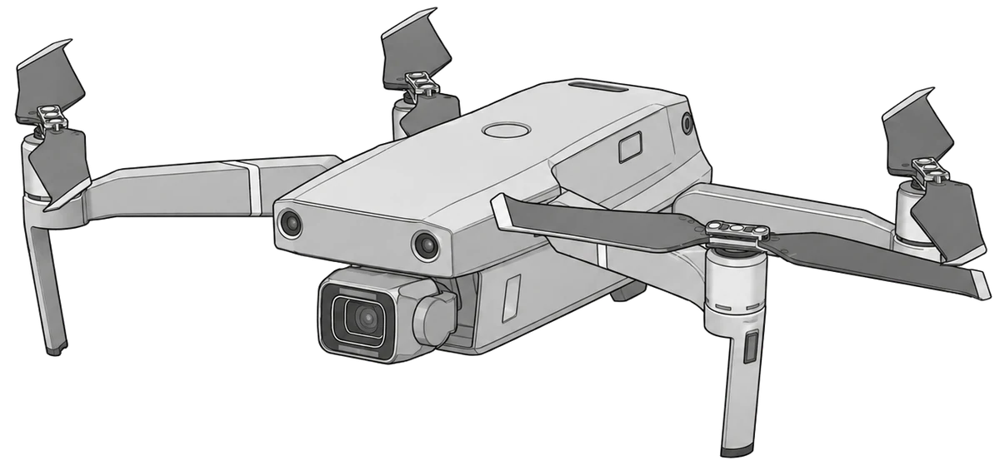
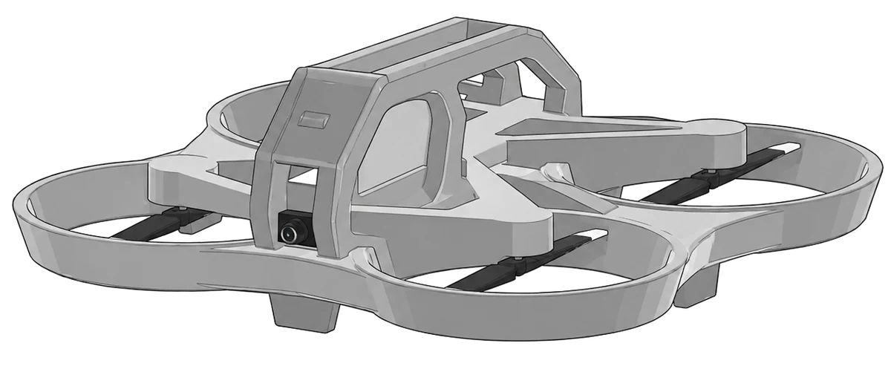
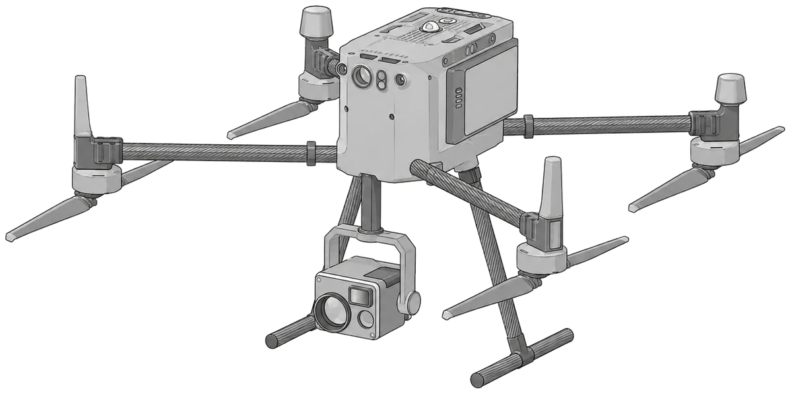
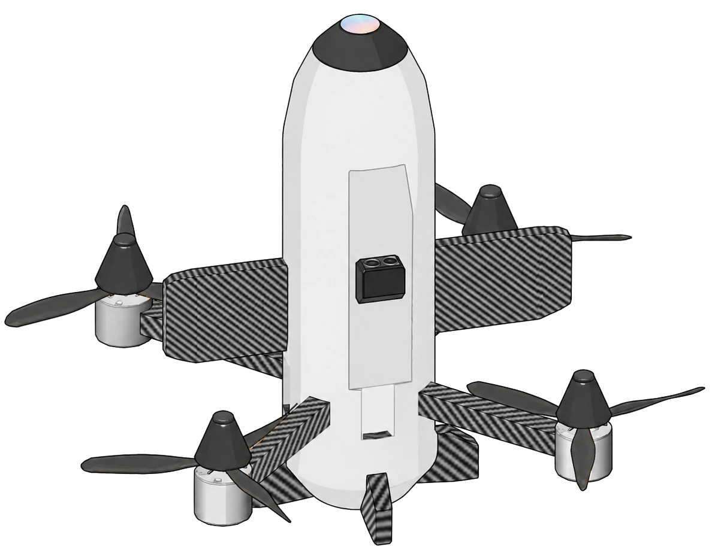
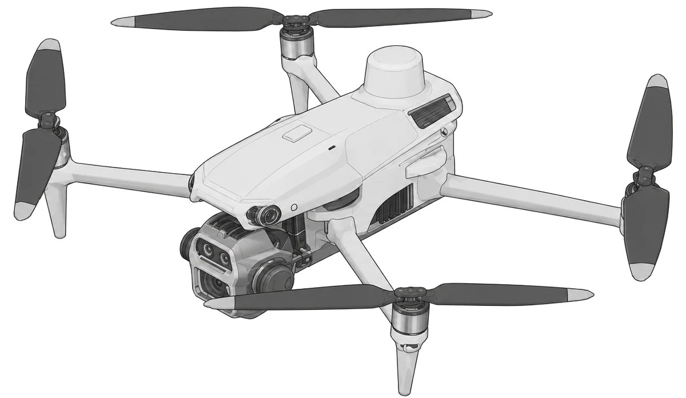

Perfiles de vuelo diferenciados, modos ACRO / ANGLE / HORIZON, respuesta configurable, parámetros de física y compatibilidad con gamepad, controladores RC y perfiles HID.
Synthetic training · XR · UAS
ENTRENAMIENTO SINTÉTICO PARA OPERACIONES CON SISTEMAS REMOTOS AUTÓNOMOS
SimDron integra vuelo inmersivo, dinámica configurable, sensores, planificación y control de misión en una plataforma optimizada para Meta Quest 3/3S y entrenamiento colectivo con Mission Control.

01Vuelo inmersivo
02Sensores y enlaces
03Escenarios tácticos
04Instrucción colectiva
01 / SISTEMA
DE LA OPERACIÓN INDIVIDUAL AL ENSAYO DE MISIÓN.
La plataforma combina simulación de vuelo, sensores, entorno, automatización y supervisión del instructor para representar tareas operativas dentro de un mismo ecosistema.
Cámaras configurables, gimbal, FOV, visualización RGB/IR, telemetría, seguimiento y perfiles orientados a reconocimiento de corto alcance y observación.
Supervisión multiusuario, vistas de cámara, telemetría, mapa táctico, waypoints, estados de operación y herramientas para coordinar ejercicios individuales o colectivos.
Escenarios 3D extensos, iluminación, viento, navegación, enlace, autonomía, RTH, IA y configuración de plataforma para construir ejercicios con distintos niveles de complejidad.
02 / PLATAFORMAS
PERFILES DE AERONAVE PARA DIFERENTES TAREAS.
Los perfiles modifican la experiencia de vuelo, sensores, prestaciones y configuración de la plataforma sin convertir la interfaz en un selector genérico de vehículos.






03 / FLIGHT MODEL
MODELOS DE VUELO, VISUALIZADOS EN 3D.
El modelo puede rotarse con mouse o touch. Los controles ACRO, ANGLE y HORIZON ejecutan una demostración visual conceptual del comportamiento de actitud; la dinámica real se calcula dentro del simulador.
ACRO
Control directo de velocidad angular. La actitud no se autonivela al soltar el mando.
BANK DEMO
000°
ARRASTRAR PARA ROTAR · RUEDA / PINCH PARA ZOOM
04 / MISSION CONTROL
INSTRUCCIÓN COLECTIVA Y SUPERVISIÓN EN TIEMPO REAL.
El instructor puede trabajar sobre el estado del ejercicio, mapa, cámaras y telemetría desde una estación central, mientras múltiples operadores mantienen su propia experiencia de vuelo.


01Mapa táctico y waypoints
02Telemetría por operador
03Vistas FPV / SRR / instructor
04Control y seguimiento del ejercicio
05 / CARTOGRAFÍA
ESCENARIOS Y TERRENO COMO PARTE DEL EJERCICIO.
Las vistas pesadas se cargan sólo cuando el usuario abre la sección, para mantener rápida la página principal y permitir ampliar la biblioteca de mapas más adelante.
06 / SENSOR STACK
VUELO, OBSERVACIÓN Y TELEMETRÍA EN UNA MISMA EXPERIENCIA.
SimDron integra representación de sensores, gimbal, campo de visión, modos de cámara y datos de navegación dentro del flujo operativo del usuario.
RGB / IRFOVGIMBALAGL / MSLLINKTRACK

07 / DEVELOPMENT
DESARROLLO MULTIDISCIPLINARIO.
DESARROLLADOR
SIM / XR
Mauro Iván Piccoli
Technical Lead · Unity / C# · XR & VR · Simulation Systems · 3D / Technical Art
Perfil técnico multidisciplinario aplicado a arquitectura de software, físicas de vuelo, herramientas de instructor, IA, interfaces, arte 2D/3D y optimización para hardware standalone.
Ver repositorio del proyecto ↗